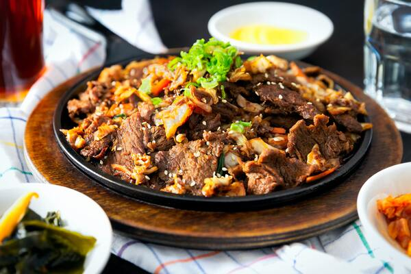

BBQ Liver Recipe

Description
This is a recipe for a mild tasting liver that you can server over rice.
Ingedients
- 1 Pound Beef Liver
- 1 Cup Ketchup
- 1 Teaspoon Salt
- 4 Teaspoon Coconut Aminos
- 4 Tablespoons Brown Sugar
Steps
- Trim silverskin from liver and cut liver into half inch cubes.
- Rinse liver in cold water, and place in bowl. Cover liver with cold water and 1 Tablespoon of lemon juice.
- Mix other ingredients together to make a bbq sauce.
- Fry up liver in a pan
- Add bbq sauce to pan.
- Serve over rice.